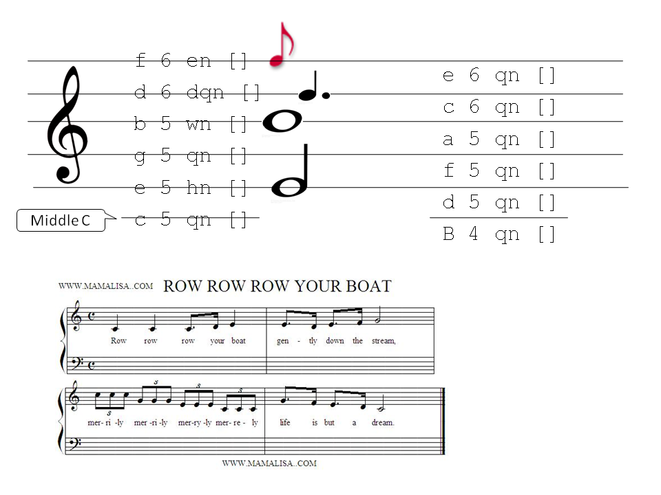

Music Composition Worksheet
Goals
The purpose of this worksheet is to practice creating music using Haskeore.
We will focus on transcribing small pieces of music from a written score
(sheet music) into a Haskore program.
What to do
- Get and install the Haskore Libraries from Hackage haskore-vintage using cabal.
- Understand written music notation (sheet music)
- Transcribe "Row Your Boat" into Haskore
- Use the guide below
- Think carefully about how to create a "triplet" for the
parts of the song with lyrics "mer-ri-ly"
- See some sample transcriptions for a C-Scale.
- Modify the music to create a round.
- Play your music at different tempos
- Play your music so each part of the round uses a different instrument.
- What instuments are there?
- Find sheet music for a song of your choice from the internet, and transcribe
a part of it.
Your code will start something like:
module RowYourBoat where
import Haskore
import Data.Ratio((%))
row:: Music
row = undefined
main = undefined
